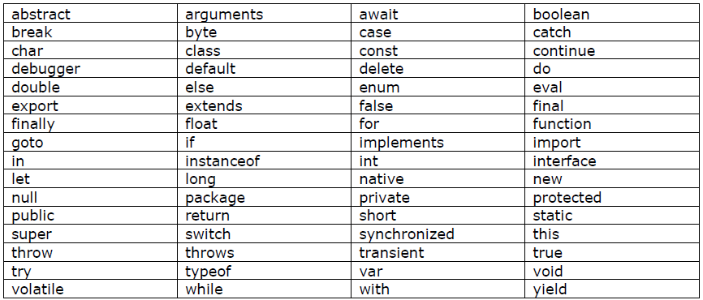
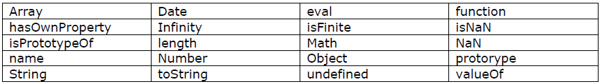
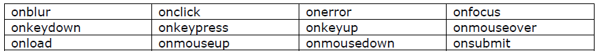

The Document Object Model (DOM) is an application programming interface (API) for HTML and XML documents. It defines the logical structure of documents and the way a document is accessed and manipulated.
CSS
What is CSS?
Specifies the presentation aspects of structurally marked up documents
Developed by Hakon Wium Lie (CHSS) and Bert Bos (SSP)
Versions
CSS 1 (1996)
monolitic
CSS 2.1 (June 2011)
monolithic
CSS 3
Immediately super seeded by 3.2 -> 4.0 (1997) -> 4.01 (1999)
4.01 - XHTML (1.0, 1.1, 2.0)
To allow browser vendors implement what they want to implement and features can become recommendations when they are already mature enough
No centralized repository to view available features
No 'level 3', means it didn't existed in v2.1
CSS Preprocessors and Frameworks
CSS Preprocessor
Use advance syntax, the convert it to flat hierarchy when compiled
Syntactically Awesome Style Sheet (SASS), LESS, 960 Grid System etc.
@mixin
mixing a block of properties in another block of properties
all Used for all media type devicesprintUsed for printersscreen Used for computer screens, tablets, smart-phones etc.speech Used for screenreaders that "reads" the page out loud
CSS Declarations
Properties
shorthand properties - single property representing many other
initial - explicitly set the initial value of a property
inherit - explicitly setting property value inherited
unset
revert
Values
keywords
numbers
dimensions
length, angle, duration, frequency, resolution
length units
font-relative: em, ex, ch, rem
viewport-percentage: vw, vh, vmin, vmax
absolute lengths: cm, mm, q, in, pt, pc, px
angle units: deg, grad, rad, turn
durations units: s, ms
frequency units: hz, khz
resolution units: dbi, dpcm, dppx
percentages
URLs and URIs
colors
strings
Functions
calc(), attr(), counter(), counters(), linear-gradient(), radial-gradient(), translate(), scale(), rotate(), etc.
CSS cont.
CSS statements
At-rules
@charset (specify character set)
@import (import stylesheet)
@media (media query)
@font-face (key frame animation)
@page
@document (stylesheet for specific page/domain)
@namespace (svg)
CSS Selectors
Selectors are ways of selecting elements you want to style
Examples of selectors
*
Selector used to target every element in the HTML file
#idName
Selector used to target an element with the specifc id
.className
Selector used to target elements with the specified class name
parentElem descendantElem
Selector used to target an element or elements that the child/Children of the parentElement specified
elementType
Selector used to target all elements on the page with the specific type
element: link
Selector used to target all links which have yet to be clicked on
element: visited
Selector used to target all links which have been visited/clicked on
precedingElement + Element
Selector used to target all elements that immediately come after the specified preciding element
element > directChildrenElement
Selector used to target all elements that are Direct Children of the element specified
element[elementAttribute]
Selector used to target all elements that have the specified attribute
CSS Rule Precedence
By Origin and Importance
example: color = red !important
FROM HIGHEST TO LOWEST
1 user agent important declarations
2 user important declarations
3 author important declarations
4 author normal declarations
5 user normal declarations
6 user agent normal declarations
By Specificty
FROM HIGHEST TO LOWERS
1 inline style
2 number of id selectors
3 number f class selectors,attribute selectors & pseudo-classes
4 number of type selectors & pseduo-elements>
By Order
last declaration gets higher priority
Javascript
Javascript
JavaScript is the programming language of HTML and the WebGlobal information system (as defined by Federal Networking Council)JavaScript is a client-side script
Associating JavaScript to HTML Documents
external sourcecodes can come from external files in .js
format where the source is specified in a <script> tag.<script> tag can use defer and async attributes to specify when to run codes from an external source.
deferexecuted in the order they occur in the page
asyncexecutes at the first opportunity after it is finished downloading and before the window's load event.
embeddedcodes can be within the HTML document within a pair of <script> tagsinline scriptsuses the event handlers
Scope of JavaScript Codes
Top-level/ GlobalThese are the codes that are not inside a function statementLocalThese are the codes that are inside a function statement
Syntax
JavaScript statements are separated by semicolons
JavaScript statements are composed of Values, Operators, Expressions, Keywords, and Comments
Fixed values are called Literals. Variable values are caller variables.
Variables are used to store data values. (Eg. var x; x = 6; )
Operators
+ (addition)
- (subtraction)
* (multiplication)
/ (division)
= (assignment operator)
Expressions
Eg. 5 * 10
x + 2
x + y + 1
Comments
Code after double slashes // or between /* and */ is treated as a comment.
Comments are ignored, and will not be executed
Identifiers
Identifiers are names used to name variables.
The first character must be a letter, an underscore (_), or a dollar sign ($).
JavaScript is case sensitive
When joining multiple words in JavaScript, the words are either separated by a dash (-) or an underscore (_), or by using the Lower and Upper Camel Case Principle
variable-name
variableName
variable_name
JavaScript Reserved Words
Reserved words cannot be used to name variables, labels, and function names.

JavaScript's Built-in Objects, Properties, and Methods (Functions)

JavaScript Event-Handlers

Examples of what JavaScript can do
JavaScript can change HTML content by using .innerHTML or .outerHTML
With the object model, JavaScript gets all the power it needs to create dynamic HTML:
JavaScript can change all the HTML elements in the page
JavaScript can change all the HTML attributes in the page
JavaScript can change all the CSS styles in the page
JavaScript can remove existing HTML elements and attributes
JavaScript can add new HTML elements and attributes
JavaScript can react tall existing HTML events in the page
JavaScript can create new HTML events in the page
HTML DOM METHODS
HTML DOM methods are actions you can perform (on HTML Elements).HTML DOM properties are values (of HTML Elements) that you can set or change.
HTML DOM DOCUMENT OBJECT
Find an element by element iddocument.getElementById(<IDOFELEMENT>)Find an element by tag namedocument.getElementsByTagName(<TAGNAMEOFELEMENT>)[<INDEXOFELEMENT>]Find an element by class namedocument.getElementsByClassName(<CLASSOFLEMENT>)[<INDEXOFELEMENT>]
CREATING/ADDING/REMOVING HTML ELEMENTS
Create an elementdocument.createElement("<element>")Remove an HTML element<PARENT>.removeChild(<element>)Add an HTML element<PARENT>.appendChild(<element>)Replace an HTML element<PARENT>.replaceChild(<element>)Write into the HTML output streamdocument.write("text");